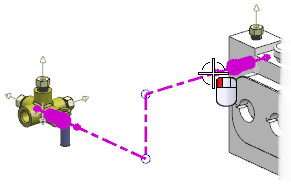
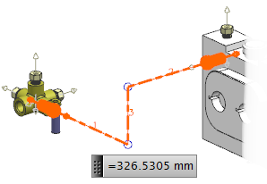

确定路径总长
-
点击实用工具工具条上的测量距离
 。
。 -
在测量距离对话框的测量类型列表中，选择管线布置路径长度。
-
在选择条上的方法列表中，选择管线布置。
-
通过选择任意一条管线段来选择整条路径。

所有管线段都将被包含在报告中。

-
在结果显示组中，选中显示信息窗口
 复选框。
复选框。信息窗口将列出所选管线布置对象的各段长度以及路径总长。
===============================
Routing Path Length
Information Units mm
Total Length = 326.53053
Segment 1 = 72.48185
Segment 2 = 118.13814
Segment 3 = 135.91054 -
关闭信息窗口。
-
点击确定。